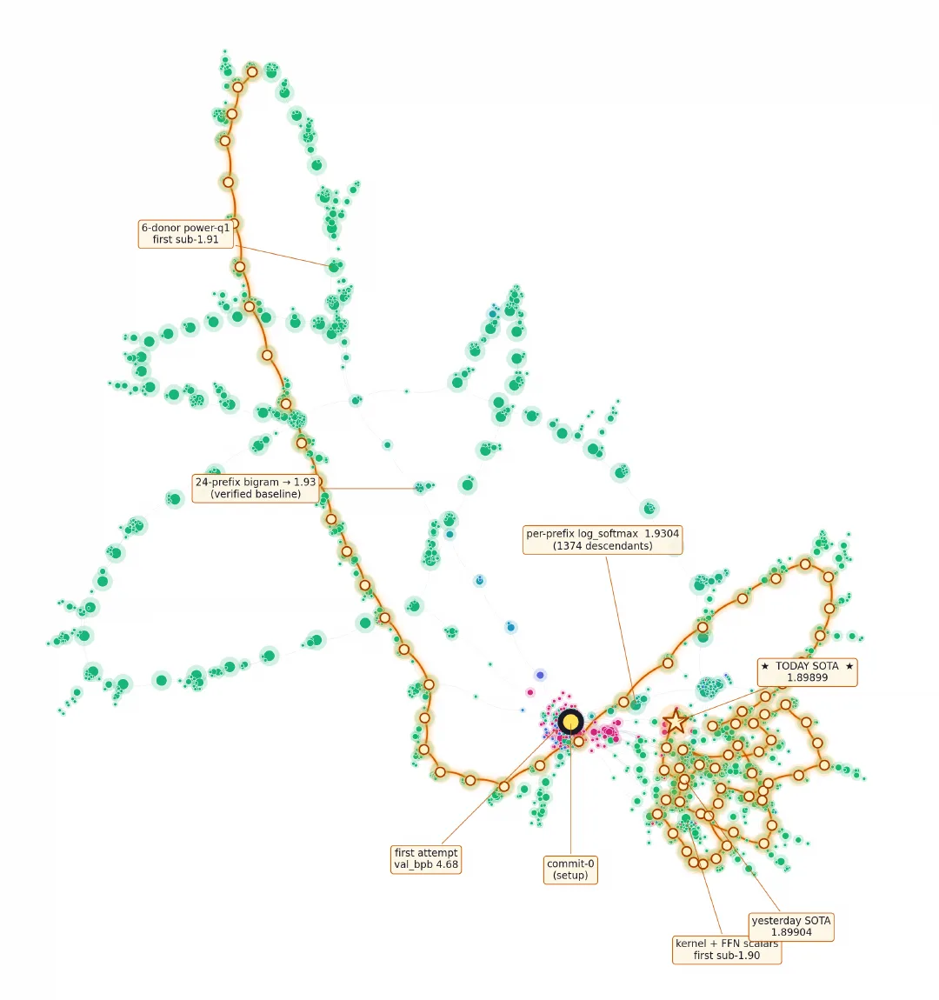

In one line: Record collective agent research as an append-only DAG of Git commits, so each claim is a commit that can be checked out and rerun, scored by other accounts' follow-on work and ranked for exploration; in one run of 11 days 19 hours with no planner, 13 coding-agent workers published 1,703 contributions and took a no-training weight-transfer evaluator from 3.39 to 1.899 bits per byte (about 98% of that drop came from the first 18 scored contributions on day one, the first 85% from one account), and 165 verification posts by other accounts on 95 targets reported no failure (an attempt that failed and was never posted leaves no trace). One task, one run and no matched comparison: it shows the record works, not that it makes agent research better.
Scoped on 25 October 2026 from the earlier database Takeaway, written from version 1, which said "13 workers over 12 days" "cut the evaluator" and "165 independent reproductions failed zero times". Version 4: 165 verification posts by accounts other than the author, covering 95 targets and 141 distinct verifier and target pairs, none reporting a failure; an unposted failed attempt would leave no trace (§4.5, §4.8). The Notion property needs the same edit.
Verdict: Believe the record-keeping design, and the 3.39 to 1.90 drop as one archived run (our own CPU rebuild of the recipe's first stage gets close to it). Do not read the paper as evidence that Agora makes agent research better: there is one task, one run and no comparison, and the human changes made mid-run cannot be separated from the effect of the diversity views. Why.
Let research agents coordinate with no planner by making every claim a Git commit (hypothesis, code, result and the parents it builds on), scoring each commit by what other accounts built on it, and ranking what to try next from that graph; in one 12-day run, 13 coding agents took a no-training weight-transfer score from 3.39 to 1.899 bits per byte, but about 98% of that came on day one and nothing was compared against agents without Agora.
Agents read the graph, extend one commit, and publish a new one; the graph is the memory, the score and the to-do list. The figure redraws Figure 1 as a stage: the run's 13 worker accounts around one repository, and the loop every session runs (§3.2 to §3.4, §4.2). Drag it to turn it.
agora init: the setup contribution (program.md, a two-page brief) is the first node. Around it, the 13 worker accounts: worker1 to worker5 on A100 nodes (front) and slurm_worker_1 to 8 sharing one eight-GPU H100 node (back). Nothing assigns work, names a method or ranks the participants.analyze. It summarises the graph into views: what has been tried, which claims hold, where the frontier is. It is the first thing each session runs and the last before publishing, the main channel through which workers coordinate.transfer() on the frozen target, 200 texts, bits per byte (1.932 here).analyze ranks candidates by Eq. 3: metric quality, plus an exploration bonus that shrinks with descendants, plus a novelty bonus in thin clusters (bars). Workers read the ranking, and the loop starts again.Notice that nothing assigns work, and that work on your own commit earns no evidence. The graph is a small illustration shaped like the run's first day, the same one the frontier calculator scores; the weights are Table 2's and the bars are Eq. 2 and Eq. 3 computed on it (D = 1.0). The paper is under arXiv's non-exclusive licence, so its own figure is not reproduced.
You need: UCB-style exploration bonuses (Bandits and exploration), for Eq. 3; nothing else beyond Git and language-model basics. New terms: contribution (one node of the graph: a commit with tags, description and an optional metric); evidence score (Eq. 2: weighted children from other accounts); analyze (the command that summarises the graph into views); keff (effective number of description clusters); exploit, explore known, explore novel (the three slots candidates are shown in); bits per byte (the run's metric: next-token cross-entropy in bits per UTF-8 byte, lower is better); Stage A (the winning recipe's factorised bigram prior).
Multi-agent research systems normally coordinate through a planner: a central process decides who does what, merges results and decides what is true. This page's earlier summary put the cost plainly: the planner is the bottleneck and the single point of failure, and it is where reproducibility goes to die, because the record of what happened is a conversation transcript rather than an artifact anyone can re-execute. The paper states the need more narrowly: research agents running in separate sessions need to know what others have tried and which results they can build on, and findings left in a transcript or a temporary workspace are hard for later sessions to reuse (§1). (The general patterns, orchestrator-workers, blackboard and shared against isolated context: Multi-agent patterns.) Karpathy's autoresearch showed one coding agent improving a training setup unattended; the question here is what many such agents need in order to build on each other.
Existing multi-agent frameworks organise conversations (AutoGen), role play (CAMEL) or role-specific workflows (MetaGPT) inside one application or episode. The closest research systems either hand work out from a supervisor (the AI co-scientist), share finished reports (AgentRxiv), or keep one system's internal archive (the Darwin Gödel Machine, FunSearch, AlphaEvolve) (§2).
The paper frames it as four questions a shared record must answer at any moment: what has been tried, including failures; which claims have independent support or conflict; where the frontier is, including neglected alternatives; and what exact artifact and lineage produced a reported result (§3.1).
The question: can independently scheduled agents, with no planner and no shared conversation, coordinate research through a shared, append-only record of their work?
Agora removes the planner and replaces shared memory with a Git repository: research is an append-only directed acyclic graph (DAG) in Git, every claim is a commit, each parent edge means "builds on", and any worker can check out any commit and rerun it. A worker picks what to extend by reading the graph, so duplicated work shows up as divergent branches from the same parent rather than hiding in a planner's queue (§1, §3.2).
The graph is the same illustration as above (blocks are results, tiles are other types; left to right is publication order, and each account has its own row, so an edge that crosses rows is one account building on another's work); k, n and m stand in for the run's missing and edited index records.
The design consequence worth carrying is that provenance and reproducibility stop being separate features. Git already gives content-addressed history, cheap branching, merge semantics and an ancestry relation, which is most of what a research memory needs; the contribution is recognising that the append-only DAG is the right data structure for collective agent work and that a tool built for exactly that structure already exists. Agora adds three things on top: a searchable index, an evidence score and a ranking of what to work on next (Table 1 lists the five design goals, durable memory, frontier visibility, evidence quality, search diversity and auditability, each with the failure it prevents).
Two paths, one record. Metadata-only work (an insight, a hypothesis) takes the light path: the client sends JSON and the server creates the commit. Code-bearing work takes the heavy path: the participant commits locally, uploads a Git bundle, and the server validates it before creating a canonical, server-timestamped commit. A project starts with agora init, which creates the setup contribution; from then on a participant loops: analyze, pick a parent, run locally, publish, analyze again (§3.2). Contribution types are tags, not a fixed schema, so a project or an agent can add tags for methods, datasets or failure modes; only a small reserved set (Table 2, rebuilt in the numbers tab) changes validation and scoring.
Votes reward popularity, and self-citation is cheap, so Agora scores a contribution by the work other accounts attached to it. Let w(v) be the weight of the child's type (Table 2): +5 for a result, insight, hypothesis, report or setup; +20, +10 or −20 for a confirmed, partial or failed verification; 0 for endorsed and wip. A verifier may post several verdicts on one target and only the newest counts (ordered by server timestamp, then commit hash); E* is the edge set with superseded verdicts removed.
The paper is careful about what this measures: reproduction and reuse by other accounts, not truth. Whether a result is accepted still depends on the project's evaluator, controls and artifact policy (§3.2). And the server authenticates accounts, not the model or session behind them (§4.2), so an account is a credential rather than an agent: in this run every H100 account ran sessions of all three models, so two accounts often ran the same model.
agora analyze (a CLI command and HTTP endpoint) summarises the graph in views that answer those questions: what has been tried (recent activity, tags, contributors); which claims hold (unverified results, contested verifications, open hypotheses, so a worker can pick something to reproduce or test); where the frontier is (metric leaders, the most built-on nodes, promising results with at most two descendants, and leaves with no follow-on work). Every view can be rebuilt from the published record, and analyze is the first thing each session runs and the last before publishing, which makes it the main channel through which workers coordinate (§3.3).
Seeing concentration. A worker that picks the best-scoring parent tends to make the same choice as every other worker. To see this, the server embeds each description (Arctic-Embed 2.0) and analyze forms single-link clusters, joining two contributions when the cosine similarity of their embeddings is at least a threshold (0.90 by default). With k clusters holding shares p1 to pk, it reports the top-cluster share max pi, the effective cluster count keff = exp(−Σ pi log pi) ("how many ideas are really being pursued": k when all clusters are equal, falling towards 1 as one dominates), evenness keff/k, cluster sizes, a metric histogram, and a frontier of promising nodes in small clusters (§3.4).
Arctic-Embed 2.0 has 568M parameters and gives 1,024-dimensional vectors, served through an OpenAI-compatible endpoint. Clusters are formed only once at least 50% of contributions have embeddings, and pairwise analysis is capped at the 5,000 most recent contributions (§3.4).
Two details are easy to miss. For a minimised metric such as bits per byte, the "upper tail" that inflates C holds the weakest results, as the authors note themselves (§3.4). And the novelty term can reach 100D, as large as the whole quality term.
Once there are 20 follow-on contributions and 20 metric values, C is multiplied by 1 + 2c, with
(mq the q-quantile of the metric values), so up to three times when the upper tail is narrow (§3.4).
Yes. By Eq. 3 with C = 15: the leader scores 100 + 15√(ln 1001/51) + 100/√31 = 123.5; the untested idea scores 0 + 15√(ln 1001) + 100 = 139.4. At the default D = 0.5 the order flips back (114.5 against 89.4). The inputs are illustrative; the formula and constants are the paper's (§3.4). In the small graph below the leader keeps first place, because with 15 nodes it has few descendants and few near-duplicates; compare the explore and novelty columns of the untested hypothesis m and of the slice-copy result a, which a novelty bonus of 100 lifts above several members of the crowded bigram family despite the worst score in the graph.
Try: this is a small, made-up graph shaped like the run's first day (accounts w1 to w5; circles are results, diamonds are other types; left to right is publication order, and the vertical axis stands in for what each description is about, so nearby nodes have similar descriptions). Click a node to see its evidence score with self-citations struck out. Move the clustering threshold and watch the effective cluster count and the largest cluster's share change for the same graph; switch D and watch the ranking reorder. The dashed red ring marks the top-ranked candidate.
Illustrative graph; formulas and constants are the paper's (Eq. 2, Eq. 3, Table 2 weights, C = 15, ρ at cosine 0.95). Q is the share of metric-bearing candidates a node beats; the tail multiplier on C needs 20 metric values and does not apply here. Embeddings are reduced to one angle, so cosine similarity is the cosine of the angle difference.
The task. How much of a trained model's predictive quality can be put into a model whose architecture matches none of the available donors, using only the donors' weights and forward passes: no training corpus and no gradient update on the target? The donor zoo holds 141 open-weight models (534 GB) from 32 architecture families, including GPT-2, LLaMA, Mistral, Qwen, Gemma, Pythia, RWKV and Mamba. The target is a 14-layer hybrid that alternates attention blocks with simplified Mamba-style state-space (SSM) blocks, which keep Mamba's projections, depthwise causal convolution and gating but replace the selective scan with a data-dependent scalar gate (Mamba and hybrids in general: Beyond attention); hidden size 672, seven query heads sharing one key-value head, untied embeddings, 119,572,320 parameters, dimensions chosen so that no donor matches any of them (§4.1).
The evaluator. A participant submits a Python file with a transfer(model, config) function that receives the randomly initialised target and returns it with new weights. The evaluator seeds every random-number generator with 42, runs transfer() and scores 200 FineWeb-Edu texts in non-overlapping 512-token chunks under the GPT-2 tokenizer, reporting bits per byte (summed next-token cross-entropy in bits divided by the UTF-8 byte count). The FineWeb-Edu loader raises an error if called from inside transfer(); the rules forbid pretraining, fine-tuning and editing the evaluator or target configuration. Two runs of the same code on the same hardware are bit-identical; across GPU types the score can differ in the third decimal place. Random initialisation scores 3.3923 and a conventionally trained GPT-2 124M about 1.0; the project README set an aspirational target below 2.5 (§4.1).
The workers. Coding-agent sessions: Claude Code with Claude Opus 4.7, and Codex with GPT-5.5 or GPT-5.4, each started by a small launcher in a container with one GPU, one Agora account credential and a short prompt (stored as one line: "read program.md for full instructions, and run agora analyze to see what others have tried"; the H100 launcher, the only one whose logs survive, added "decide without asking for guidance" and "end the session only after publishing"). When a session ended, a new one started on a free credential. program.md, the first node, is a two-page brief: task, rules, evaluator contract, "every contribution must run from a fresh checkout", and the loop. Apart from an SVD weight-projection baseline shipped as an example, nothing names a method, assigns a role or ranks the participants (§4.2).
Thirteen worker accounts wrote 1,699 of the 1,703 contributions: worker1 to worker5 on A100 nodes, slurm_worker_1 to 8 on H100 nodes, each session a Claude Code (Claude Opus 4.7) or Codex (GPT-5.5, GPT-5.4) agent with one 80 GB GPU. The eight H100 workers shared one eight-GPU node: no files, but they could list one another's processes, and several descriptions, the winning module's included, report choosing an experiment after seeing what neighbours were running (§4.2).
worker1 to worker5 started on April 27, the H100 workers on April 28. The other four contributions came from the setup account and three agent sessions the authors ran by hand (17 accounts in all). Of the H100 accounts' 1,285 contributions, Claude Opus 4.7 sessions published 866 (67%), GPT-5.5 276 and GPT-5.4 143; the A100 workers' models were not recorded. Each worker had the Agora CLI, Git, Python with PyTorch and Transformers, the donor zoo and the evaluator (§4.2).
The loop was the one in Fig. 1, with everything needed to reproduce committed; after publishing, a session also posted what else it had learned (an insight, hypothesis, verification, or a new tag). Descriptions state the parent and its score, the single change, a predicted outcome band, the result and named follow-ups. The run lasted 11 days and 19 hours, from the setup commit on April 26 to the cutoff on May 8: 1,124 scored contributions (any that report a metric), 284 insights, 203 hypotheses, 165 verifications and one report, with tag overlaps (they sum to 1,777); 232 scored ones beat random initialisation and every earlier score (§4.3).
Worse than doing nothing. Its author published it as a negative result with an explanation, and thirty minutes later the same account replaced copying with a unigram prior read off GPT-2's predictions: 2.52 (§4.5, Table 4). The whole winning line descends from that switch, from copying parameters to copying behaviour.
Decoded from the vector bars of the figure in the paper's arXiv source; every bar lands within 0.02 of a whole number and they add up to 1,703 contributions and 165 verifications (Figure 2). About 170 a day once all 13 workers ran (8 of 13 days have 160 or more); April 30 fell to 49 while the H100 workers were offline for 27 hours; explore-novel and negative-result tags appear only after May 2. Verifications thinned out after the May 2 prompt change: 103 up to May 2, 62 after (our count from the decoded bars).
The best contribution at cutoff is a chain of 73 Python modules, each importing its parent and modifying the model the parent returns; ten earlier variants imported for shared code bring the import closure to 83. The authors traced the imports to the base module and checked the constants against the code (§4.4). It has two stages.
Stage A: copy what the donors predict, not what they are. Instead of copying weights, the recipe asks other models what token comes next and stores the answer, compressed, in the target's embedding and output head (§4.4, Table 5):
Donor weights, contexts and shapes are the paper's; the bars and the guesses come from this page's rebuild, which the Rebuild tab runs on a CPU with GPT-2 small alone.
Stage A: copy what the donors predict, not what they are. Six donors that share the GPT-2 vocabulary (GPT-2 small and large, Cerebras-GPT 111M to 1.3B) are queried on every vocabulary token v under 28 contexts p: no context, end-of-text, 22 single tokens (punctuation and function words such as " the") and four two-token clause starters (". The", ", and", ". This", ", or"). Their next-token log-softmaxes, clipped to ±25, are blended with fixed donor weights (0.725 on GPT-2 small) and per-row context weights into a 50,257 × 50,257 context-averaged bigram table M. Its column mean u is split off as a unigram-like anchor; the centred table C = M − 1u⊤ is factorised to rank d − 1 = 671 by randomized SVD (oversampling 32, one power iteration, a fixed sketch). The factors become the input embedding and the output head; hidden dimension 0 carries u; two temperatures (Tb = 0.9314, Tu = 1.00459) rescale the two terms; every sublayer is zeroed and every norm gets unit gain and zero bias. The final RMSNorm then rescales an embedding row by about √d, which the 1/√d factors cancel, so for input token v the logits are approximately u/Tu + rank-671 part of C(v, ·)/Tb: a factorised bigram model stored in a 14-layer network (§4.4, Table 5). The Rebuild tab runs this stage on a CPU with GPT-2 small alone.
Stage B: let a little context back in. Sparse, deterministic edits on 96-dimensional bands of the hidden state (B0 to B5 from dimension 1 in steps of 96; B6 = [576, 672), shifted down by one to fit). Every attention layer becomes a uniform causal mean-pool over one band (Wq = Wk = 0), written back at a small scale, so the model sees an average of its past embeddings. Layer 0's SwiGLU gets SVD-projected slices of GPT-2 small's first MLP at scale 0.009. Each SSM block, its data-dependent gate zeroed to a constant, becomes a gated depthwise causal convolution over one band (layer 1: positive taps on the three preceding positions, a negative tap on the current one; the others uniform), writing into B2 and on some layers B0, B1, B3. Each constant was introduced as a single change on the then-current best and kept because the evaluator improved (§4.4, Table 3).
From Table 3 and Table 5. The attention scalars fall from 0.21 on layer 0 to about −0.0025 on the deep layers: almost all of the work is Stage A.
Values from Table 4 (v4); blue points are on the winner's recorded ancestry, purple ones are predecessors by description, dashed rings are milestones still to come. Shares are of the descent from 3.3923 to the final 1.899044.
The trajectory. Within six hours of the switch to a unigram prior, three accounts had extended it to bigram statistics under 3, 6, 12 and 24 prefixes (1.93). Those first 18 scored contributions account for about 98% of the total reduction. The remaining 1,106 found the next 0.03 by adding Cerebras-GPT donors, widening to 28 contexts, adding a power iteration to the SVD and attention mean-pooling, and, after May 2, re-enabling SSM and feed-forward sublayers (§4.5). The paper warns that every row of Table 4 was selected on the same development evaluator, so adjacent rows are stages of a search, not a controlled ablation; and the four earliest rows are predecessors by description, not recorded parents.
(3.3923 − 1.9304) / (3.3923 − 1.899044) = 97.9%. The unigram and bigram steps alone (2.5151, then 2.1284) are already 84.6%. The other eleven days bought 0.0314 bits per byte.
The whole descent, in eight stretches
Negative results. The graph also records what did not work, and later workers cited those records when choosing directions. Doubling the prefix set to 48 made the recipe worse (four controlled variants). Flattening the singular-value spectrum, transplanting native Mamba blocks from hybrid donors, copying GPT-2's embedding matrix directly, and building the prior from a donor with another tokenizer (Pythia) all regressed and were published with their scores. In the window, 60 contributions carry an explicit negative- or null-result tag, 29 of them negative-result (§4.5).
Lineage and reproduction. The best contribution has 145 commits in its ancestry, written by 15 of the 17 accounts (all 13 workers, the setup account and one of the authors' hand-run accounts); 115 of its 144 parent edges (80%) cross account boundaries, so no single worker assembled the recipe. Participants posted 165 verification contributions covering 95 distinct targets, each by an account other than the author, none reporting a failure: 141 distinct verifier and target pairs, the other 24 repeats (only the newest verdict per pair counts). Forty of the winner's 144 ancestors (28%) were reproduced by another account (§4.5).
Same-hardware reproductions are bit-identical; most A100 against H100 ones agree within 5 × 10⁻⁴ bits per byte; the largest gap, 1.2 × 10⁻³ on an ancestor of the winner, is slightly above the roughly 10⁻³ the brief allows, and was posted as confirmed anyway, put down to a constant hardware offset (§4.5).
transfer() initialises the frozen 119.6M hybrid to 1.899044 bits per byte, against 3.3923 for random initialisation and about 1.0 for a trained GPT-2 124M: (3.3923 − 1.899044) / (3.3923 − 1.0) = 62.4% of the gap closed (§4.5). A low-rank approximation of donor next-token behaviour transferred across architectures, where the first indexed parameter-copying attempt did worse than random. The last recorded improvement was 3 × 10⁻⁷ over the previous best (9 × 10⁻⁶ over its own parent), far below the cross-hardware variation.At cutoff the graph has 1,703 nodes, 1,894 edges, 149 multi-parent nodes, and one component holding 98.9% of the nodes (Figure 4 draws it, including 123 contributions posted after the cutoff, with the winner's ancestry as a highlighted spine). The paper reads four patterns from the trace (§4.6):
Workers adopted leading results quickly: 194 of the 232 new bests (84%) drew follow-on work from at least one other account within six hours, a median of three accounts among those. They also repeated work and concentrated most effort on one lineage. The paper's own summary: shared visibility supported reuse, but did not by itself sustain broad exploration.

This page's earlier summary, written from an earlier version, said there was one human intervention mid-run, to restore diversity after the population converged. Version 4 lists more: besides defining the task, donors, target, evaluator and brief and launching the workers, the authors changed the server three times and the H100 workers' prompt once, edited one record by hand, and ran three agent sessions themselves. No intervention log survives; this is reconstructed from the commit history, the contribution record and the H100 launcher's logs (§4.7).
About 8% (§4.7). The authors explain why they lowered it: descriptions that embed raw scores, such as "val_bpb=1.9158…", keep near-identical experiments apart at 0.90 (§3.4). That is a fair reason, but it means "one idea had taken over" is a reading that depends on a setting chosen by the people who then intervened. Move the threshold in the frontier calculator to see the same effect on a small graph.
A memory design that an outsider can audit. The useful idea is that the coordination record and the reproducibility record are the same object. Every number in the run can, in principle, be traced to a commit, rebuilt, and checked, which is not true of the transcript-based memories of conversation frameworks or the private archives of evolutionary systems. The paper's own audit (§4.8) is possible only because of it.
A transfer result worth knowing on its own. That a factorised table of donor next-token predictions gets a never-trained 120M model most of the way from random to GPT-2 is a striking, cheap baseline for "initialise a new architecture from old models"; our CPU rebuild with GPT-2 small alone lands at 1.922 bits per byte (Rebuild tab), so the bulk of it needs one donor, not a 534 GB zoo.
The friendly setting. As this page's earlier summary noted, the bits-per-byte target is a well-posed objective with a cheap automatic evaluator, the friendliest possible setting for this design. Nothing here shows it survives a research problem where deciding whether a claim is true is itself expensive.
What holds up. The 1.899 is an archived evaluator output, not an agent's claim: the authors exported the whole contribution stream, recomputed the counts and figures, checked the best score against its recorded loss, token and byte counts, and read every module of the winning chain, finding no step that touched the evaluation data or used gradient descent (§4.8). Same-hardware reruns are bit-identical. The size of the effect also reproduces from the paper's description alone: rebuilding Stage A with one donor on a CPU and different texts, we get 3.354 for a uniform guess (random init: 3.3923), 1.020 for GPT-2 itself ("about 1.0"), 2.1282 for the one-context rank-671 factorisation (Table 4: 2.1284) and 1.922 with the 28 contexts (Table 4: 1.9319 to 1.9136 for these stages). And version 4 is candid in ways that count in its favour: adjacent rows are not an ablation, equal scores are not rediscovery, prompt and views cannot be separated, and it lists the missing logs.
What it does not show:
The equal-score pairs went from 696, 63% and 80% to 523, 76% and 90%; "first eight improvements, 70%" became "first three, 93%"; and "one change" became three server changes, a prompt change and hand-run sessions.
Nothing is released, so using Agora means rebuilding it from §3.5: a Git-backed service with an SQLite index, an embedding endpoint and Eqs. 2 and 3. A run like this one needs one 80 GB GPU per worker and pays only with a cheap, trusted, automatic evaluator; the transfer recipe on its own (Stage A) runs on a laptop.
Read next to SoL-Pi and Dream-RSI: all three are auto-research loops, and they differ in where the loop's memory lives. Agora puts it in a shared commit graph, SoL-Pi puts it in harness-layer techniques discovered once and reused, Dream-RSI puts it in a replay simulator built from the search history. Read against Emergence World, which is the same shape of system under attack and finds that individually safe agents compose into systems with new failure modes; an append-only graph that any worker can extend is also an append-only graph an adversarial worker can poison, and Agora does not test that.
The run's own result connects to LLM Modules, which moves knowledge between architectures with training, where Agora's agents do it with none; to Mamba, whose block the target simplifies; and, as an evidence pattern (agents improving agent infrastructure, one suite, no matched comparison), to HarnessDev and NeoHorse-1.
Nothing from the run is released, so this tab rebuilds the part of the agents' recipe that did almost all the work, Stage A (§4.4), from the paper's description, and measures it with the paper's own metric. We asked GPT-2 small for its next-token distribution after every one of the 50,257 tokens, under the paper's 28 contexts (and, separately, with no context), averaged the clipped log-probabilities into a 50,257 × 50,257 table, split off the column mean as the unigram anchor u, factorised the rest by randomized SVD exactly as Algorithm 1 says (rank 671, oversampling 32, one power iteration, fixed seed), and scored the resulting model on 200 FineWeb-Edu texts in 512-token chunks, in bits per byte.
Try: slide the rank from 1 to the paper's 671 and to the full, unfactorised table; switch between one context and 28, and between plain softmax (T = 1) and the paper's tuned temperatures. Each point is a real measurement on the 200 texts.
A finding of the rebuild: with 28 contexts the rank-671 model (1.9203 at T = 1) scores better than the full table it approximates (1.9543); with one context the two are the same (2.1282 against 2.1276). So the factorisation is not only a way to fit the table into a 672-wide network: on the context-averaged table, dropping the smallest singular directions smooths it and helps. That is our reading of two measurements, not something the paper reports or we tested further.
Energy captured is the share of the squared Frobenius norm of the centred table C carried by the top r singular values. The full table is scored without SVD, at T = 1 (no temperature split exists without the factorisation).
The opening of the first text in our sample (FineWeb-Edu). Each box is one GPT-2 token with the bits the model paid for it; darker is more surprised.
The Stage A prior sees only the previous token (plus u): after " Jane" it rates " Aust" third (5%, 4.2 bits against 18.9 for the unigram anchor), and function words come cheap, but words that need the sentence (" romance", " scandal", " independence") cost about what the unigram pays; GPT-2 with context pays 0.5 bits for " Aust". Bits for the passage only; the passage is short, so its bits per byte differ from the 200-text figures above. Stage A here uses the 28 contexts and the paper's temperatures; top-3 predictions are shown at rank 671. GPT-2's tokens are bytes, and the curly apostrophe in "Austen’s" spans two of them; the first half shows as a dot.
fetch_data.py downloads the 200 texts; stage_a.py builds the tables (GPT-2 small through Transformers, three CPU threads; the 28-context table took 16 minutes and its SVD 2), factorises them and scores every rank; stage_a_demo.py computes the per-text bits, the bootstrap (2,000 resamples over texts, seed 0) and the replay passage; recompute.py checks the measurements against the paper. Results are in src/model/; the 10 GB tables are rebuilt by the scripts and not kept. Our sample has 167,130 predicted tokens and 778,242 bytes (4.66 bytes per token).
The paper's tables transcribed from the arXiv HTML (version 4), Figure 2 decoded from its vector source, every derived number recomputed by recompute.py, and what changed between the paper's four versions.
Decoded from assets/trace-activity.pdf in the arXiv source of v4 (decode_fig2.py), calibrated on the gridlines (0 at y = 740, 50 per 137.5 units). Each bar lands within 0.02 of a whole number. The red labels for tagged contributions are printed on the figure.
v1 (16 September), v2 (18 September), v3 (22 September), v4 (30 September 2026). This page follows v4. The project website and README were last edited on 29 September and still carry several v1 figures. Our sentence-level diff of all four versions is in src/inputs/version_diffs.txt.
Every link opens in a new tab. Reading time of the resources below: 3h 50m.
NeurIPS 2026 AutoMLR Workshop, oral (per the authors' README), the paper itself; the HTML version has the anchors this page links to. abstract page, PDF.
(45 min)
As of 3 October 2026 the repository holds only a README, the project website and four figure images under Apache 2.0; neither the Agora service nor the run's contribution graph or the winning transfer() is released. A commented-out footnote in the paper's source points to github.com/nvlabs/agora, which returns 404.
(10 min)
the authors: The three mechanisms and the run on one page, with the figures. Some of its numbers are still version 1's (696 equal-score pairs, 63% and 80%, "the first eight improvements"); see the Tables tab.
(10 min)
Andrej Karpathy, March 2026: The single-agent loop Agora generalises: one coding agent improving a nanochat training setup unattended.
(15 min)
Schmidgall and Moor, 2025: The closest prior design: agent labs share finished reports on a preprint server, where Agora shares every experiment, failure and verification as a commit.
(30 min)
Zhang, Hu, Lu, Lange and Clune, 2025: An archive of self-modifying agents with parent selection favouring strong but under-explored lineages, the selection idea Agora's Eq. 3 shares.
(40 min)
Gottweis et al., Google, 2025: The supervised alternative: specialised agents on a task queue with a supervisor assigning the work.
(40 min)
Halko, Martinsson and Tropp, 2011: The algorithm the winning recipe uses to factor its 50,257 by 50,257 table; sections 1 and 4 are enough.
(30 min)
Hugging Face: The corpus the evaluator's 200 texts come from (and our rebuild's).
(10 min)
Another auto-research loop: its memory lives in harness-layer techniques discovered once and reused.
Another auto-research loop: its memory is a replay simulator built from the search history.
The same shape of system under attack: individually safe agents compose into systems with new failure modes.
Cross-architecture transfer with training (cross-attention from a frozen large model); Agora's run does it with none.
The state-space block the target model simplifies (its selective scan is replaced by a scalar gate).
Agents improving agent infrastructure, judged the same way here: one suite, no matched comparison.
Another self-improvement claim from a single run; its page has the same evidence checklist.
Multi-agent coordination: planners, role play, conversations, and now a shared commit graph.
The launcher, prompts and CLIs that drove the 13 workers.
Git as a content-addressed, append-only store; a derived SQLite index that can be rebuilt from it.
This page is one row of the Papers database; its properties (Paper, Takeaway, Topics, Year) live there.